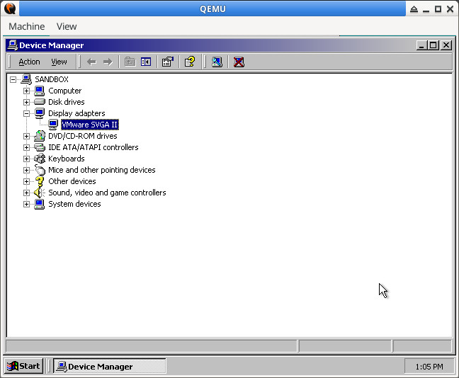
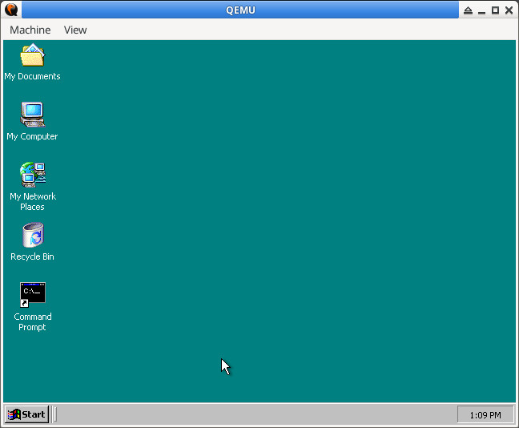

參考資訊： https://archive.org/details/vmware-svga-2-win2000 https://www.pierov.org/2022/04/28/windows-2000-in-2022/ QEMU(-vga vmware)
$ qemu-system-i386 -m 256 -vga vmware -accel tcg -display gtk -hda win2k.qcow2 -boot c

